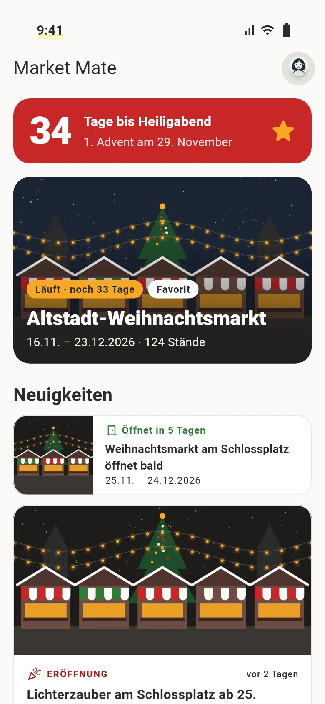

Alle Stände auf einer Karte
Jede Hütte mit eigenem Symbol: Glühwein, Herzhaftes, Süßes, Kunsthandwerk, Bühne und Service – auf einen Blick sortiert.

Wo gibt’s hier Crêpes? Welche Hütte hat den Kinderpunsch? Market Mate zeigt dir alle Stände auf einer Karte – und hilft dir, im Gedränge deine Freunde wiederzufinden.

Alles, was du auf dem Markt brauchst – ohne Faltplan und ohne Herumirren.
Jede Hütte mit eigenem Symbol: Glühwein, Herzhaftes, Süßes, Kunsthandwerk, Bühne und Service – auf einen Blick sortiert.
Tippe „Crêpes“ oder „Kinderpunsch“ – die App zeigt dir, wo es das gibt, und bringt dich auf der Karte direkt hin.
Gründe ein Team, teile den Code – und ihr seid für den Abend verbunden. Standort teilen, damit ihr euch im Gedränge wiederfindet bald
Lieblingsstand gefunden? Merk ihn dir und finde ihn beim nächsten Besuch sofort wieder.
Öffnungszeiten, Eintritt, Veranstalter und Tipps – gesammelt an einem Ort statt verstreut über Flyer und Webseiten.
Weihnachtsmarkt, Pfingstmarkt oder Weinfest: Zu jeder Saison zeigt dir die App die passenden Märkte, Neuigkeiten und einen Countdown – auf Deutsch und Englisch.
Mit E-Mail oder „Mit Apple anmelden“ – in unter einer Minute.
Wähle deinen Markt aus der Liste und sieh sofort alle Stände auf der Karte.
Suchen, merken, Freunde einladen – und den Abend genießen.
Sie veranstalten einen Markt? Bringen Sie ihn in wenigen Minuten auf die Karte – aus Ihrem bestehenden Lageplan.
Für Veranstalter